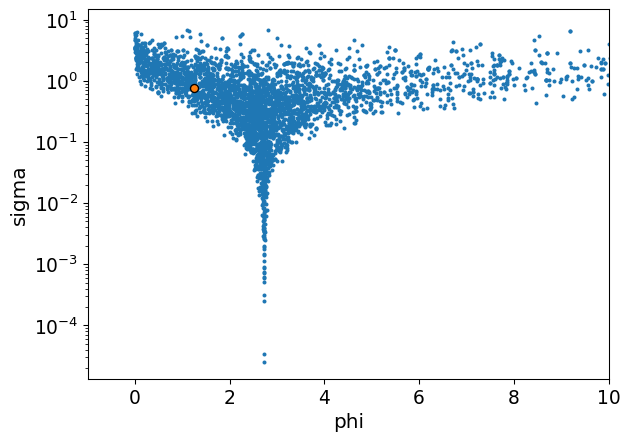
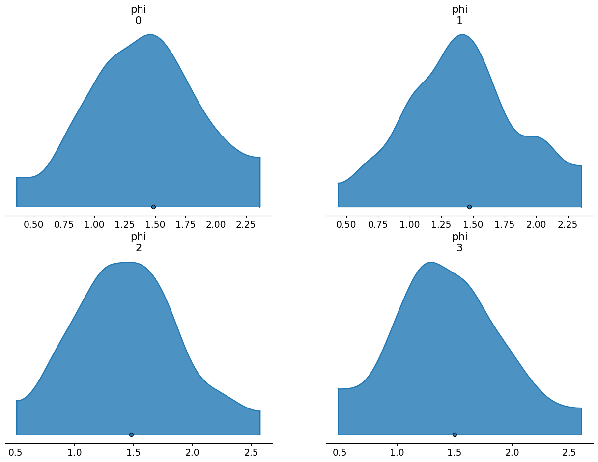

with pm.Model() as m0:
sigma = pm.Gamma('sigma',mu=1.0,sigma=1.0)
phi = pm.LogNormal('phi',mu=1.0,sigma=sigma)
compiled_model = nutpie.compile_pymc_model(m0)
t0 = nutpie.sample(compiled_model,chains=4,tune=1000,draws=1000,progress_bar=False);A positive constrained non-centered prior that sparks joy
Unsurprisingly, it makes MMMs faster and more stable.
1. They can funnel just like hierarchical normals

2. Parameterizing in log space makes it hard to control the mean and variance of your distribution
One strategy is to just work in log space. There, you can build a normal model that is unconstrained. This gives you access to familiar reparameterization techniques like non-centering. Then you exponential transform everything to enforce the positivity constraint.
mu = 1
with pm.Model() as m1:
sigma = pm.Gamma('sigma',mu=1,sigma=1)
# non-centered trick
log_phi_z = pm.Normal("phi_offset",mu=0,sigma=1)
log_phi = mu + log_phi_z * sigma
# make it positive
phi = pm.Deterministic("phi",pm.math.exp(log_phi))
compiled_model = nutpie.compile_pymc_model(m1)
t1 = nutpie.sample(compiled_model,chains=4,tune=1000,draws=1000,progress_bar=False)
The problem is that we quickly lose control over the mean and variance. The exponential transform introduces a very long tail behaviour which blows the distribution up. Check out that mean and standard deviation:
| mean | sd | hdi_3% | hdi_97% | mcse_mean | mcse_sd | ess_bulk | ess_tail | r_hat | |
|---|---|---|---|---|---|---|---|---|---|
| phi | 1400.664 | 75282.985 | 0.0 | 17.085 | 1188.202 | 37115.777 | 2589.0 | 2713.0 | 1.0 |
The class
One can easily get lost trying to guess how to generate the desired distribution in the positive space. A tempting line of thinking is that you can just take the log of your desired mean and variance and then pass those to the normal.
Taking the logs or any number of other heuristic approaches runs into two main problems: 1. Applying exponentiation will entangle a distribution’s mean and variance. If the mean gets larger, so does the variance. If the variance gets larger, so does the mean. So your distribution will have some huge values in its typical set. If you run away from those huge values by reducing the mean and variance, you’ll get a distribution tightly bunched around 0. This will probably be too strongly informative to recover the values you are interested in. 2. Even if you can get the mean that you want, we aren’t working with a single value here. We have a distribution of parameters. We’d also need to find a way to make sure our distribution is well-behaved for all parameters in the typical set of our hyperparameters.
The modeler who works on heuristics is not prepared to handle the mystical transformative powers of exponentiation. Wikipedia, however, operates on the wisdom of generations and offers a path through the mists. To generate a log-normal distribution with our desired mean (\(\mu_{X}\)) and variance (\(\sigma_{X}^2\)), we have these formulae:
\[\mu = \ln(\frac{\mu_{X}^2}{\sqrt{\mu_{X}^2 + \sigma_{X}^2}})\]
\[\sigma^2 = \ln(1 + \frac{\sigma_{X}^2}{\mu_{X}^2})\]
If we put these formulae inside a pymc model, we can make the appropriate correction for every combination of hyperparameters. Here’s a class, in the style of the Prior class, that implements this approach.
from pytensor.tensor import TensorVariable
from pymc_extras.prior import create_dim_handler
class LogNormalExp:
def __init__(self, dims: tuple | None = None, centered: bool = True, **parameters):
self.parameters = parameters
self.dims = dims
self.centered = centered
def _create_parameter(self, param, value, name):
if not hasattr(value, "create_variable"):
return value
child_name = f"{name}_{param}"
return self.dim_handler(value.create_variable(child_name), value.dims)
def create_variable(self, name: str) -> TensorVariable:
self.dim_handler = create_dim_handler(self.dims)
parameters = {
param: self._create_parameter(param, value, name)
for param, value in self.parameters.items()
}
# transformation trick to constrain the mu and sigma
mu_log = pt.log(
parameters['mu']**2 / pt.sqrt(parameters['mu']**2 + parameters['sigma']**2)
)
sigma_log = pt.sqrt(
pt.log(1 + (parameters['sigma']**2 / parameters['mu']**2))
)
if self.centered:
log_phi = pm.Normal(
name+ "_log",
mu=mu_log,
sigma=sigma_log,
dims=self.dims
)
else:
log_phi_z = pm.Normal(
name + "_log" + "_offset",
mu=0,
sigma=1,
dims=self.dims)
log_phi = mu_log + log_phi_z * sigma_log
phi = pm.math.exp(log_phi)
phi = pm.Deterministic(name, phi, dims=self.dims)
return phi
LogNormalExp(mu=1, sigma=1);Benefits of the class over alternatives
I just want to explore one more approach that doesn’t work because it makes it vivid just how effective this approach is. You might be tempted to take the desired mean and standard, push them through the formula, and then build your hyperparameters around the desired values. Suppose you want a hierarchical model where group-level parameters have a mean of 1.5 and a standard deviation of 0.5. One option is:
desired_mean = 1.5
desired_std = 0.5
mu_log = np.log(desired_mean**2 / np.sqrt(desired_mean**2 + desired_std**2))
sigma_log = np.sqrt(np.log(1 + (desired_std**2 / desired_mean**2)))
mu_log, sigma_log(np.float64(0.3527848502792511), np.float64(0.32459284597450133))coords ={
"groups": np.arange(4)
}
with pm.Model(coords=coords) as model_standard:
mu = pm.Gamma("mu", mu=mu_log, sigma=0.25)
sigma = pm.Gamma("sigma", mu=sigma_log, sigma=0.25)
log_phi = pm.Normal("log_phi", mu=mu, sigma=sigma, dims="groups")
phi = pm.Deterministic("phi", pt.exp(log_phi))
prior = pm.sample_prior_predictive()
az.plot_density(
prior.prior,
grid=(2,2),
var_names=["phi"],
shade=0.8
)
plt.ylim(-0.1,10);Sampling: [log_phi, mu, sigma]
You’ll notice that the means of these the prior samples are slightly above the desired value (1.5). Meanwhile, if we look at the summary, you’ll notice that the standard deviations are much higher than the desired value. This arises we’ve only been able to partially apply the transformation we need. We took the expected value of the hyperparameters and ensured those work out. But we have no guarantee that values further away from the expected value will map to the correct place in log space. So we get an inflation of the variances.
arviz - WARNING - Shape validation failed: input_shape: (1, 500), minimum_shape: (chains=2, draws=4)| mean | sd | hdi_3% | hdi_97% | mcse_mean | mcse_sd | ess_bulk | ess_tail | r_hat | |
|---|---|---|---|---|---|---|---|---|---|
| phi[0] | 1.550 | 0.779 | 0.340 | 3.016 | 0.035 | 0.052 | 499.0 | 472.0 | NaN |
| phi[1] | 1.595 | 1.011 | 0.347 | 2.818 | 0.044 | 0.112 | 521.0 | 388.0 | NaN |
| phi[2] | 1.545 | 0.823 | 0.528 | 3.015 | 0.035 | 0.107 | 490.0 | 510.0 | NaN |
| phi[3] | 1.631 | 1.239 | 0.583 | 3.502 | 0.053 | 0.272 | 489.0 | 378.0 | NaN |
By contrast, if we use the internal transformation, we apply the same transform to every value of the hyper-parameters, expected or not. You’ll notice that the standard deviation and mean adhere very closely to our desired values.
coords ={
"groups": np.arange(4)
}
with pm.Model(coords=coords) as model_special:
mu = pm.Gamma("mu", mu=desired_mean, sigma=0.25)
sigma = pm.Gamma("sigma", mu=desired_std, sigma=0.25)
phi = LogNormalExp(mu=mu, sigma=sigma, dims="groups").create_variable("phi")
prior = pm.sample_prior_predictive()
az.plot_density(
prior.prior,
grid=(2,2),
var_names=["phi"],
shade=0.8
);Sampling: [mu, phi_log, sigma]
arviz - WARNING - Shape validation failed: input_shape: (1, 500), minimum_shape: (chains=2, draws=4)| mean | sd | hdi_3% | hdi_97% | mcse_mean | mcse_sd | ess_bulk | ess_tail | r_hat | |
|---|---|---|---|---|---|---|---|---|---|
| phi[0] | 1.514 | 0.627 | 0.323 | 2.489 | 0.029 | 0.039 | 438.0 | 369.0 | NaN |
| phi[1] | 1.514 | 0.633 | 0.538 | 2.710 | 0.030 | 0.043 | 420.0 | 471.0 | NaN |
| phi[2] | 1.514 | 0.613 | 0.450 | 2.650 | 0.025 | 0.038 | 598.0 | 453.0 | NaN |
| phi[3] | 1.545 | 0.610 | 0.380 | 2.507 | 0.030 | 0.035 | 426.0 | 406.0 | NaN |
Application in MMMs
This prior really shines in MMMs. They have positive constrained parameters (efficiency and saturation can both take on only positive values). They also really need non-centered parameterizations. The rule of thumb is that non-centered priors work better when the information in the data is limited. In real-world marketing data, we typically learn a lot about the saturation point (because the company is overspending on media) or we learn a lot about the efficiency (because the company is underspending on media) but not both. So if we have hierarchical parameters on both types of parameters, at least one of them will want a non-centered prior.
In the current (or forthcoming, depending on when you are reading this), hierarchical model in pymc-marketing examples, we use the naive exponentiated non-centered normal distribution to solve that problem.
The example looks pretty clean because I worked really hard on it1. But it was quite difficult to fit. One problem with the long-tailedness of the naive approach is that it introduces a sort of multi-modal behaviour. If you have consistent marketing over time and you move beta up, the average sales over time goes up. But average sales over time is what the intercept is supposed to represent. So the intercept and beta can generate some nasty interactions. You don’t have much control over them because your prior ensures you will explore some unusual beta values. When the sampler jumps into the beta heavens, the curvature of the parameter space can shift abruptly for all parameters, HMC’s step size will not be tuned for this rough patch, and it will register as a divergence.
Let’s redo that model and you can see how smooth this prior can be. The multi-modality issue doesn’t go away entirely (It’s just a part of the parameter space in MMMs after all :() but you start out on better footing. Using the default target accept leaves you with 2 divergences and you don’t have to push as high before they disappear entirely, like I show here.
beta_prior = LogNormalExp(
mu=Prior("Gamma", mu=0.25, sigma=0.10, dims=("channel")),
sigma=Prior("Exponential", scale=0.10, dims=("channel")),
dims=("channel", "geo"),
centered=False,
);from pymc_marketing.mmm import GeometricAdstock, LogisticSaturation
from pymc_marketing.mmm.multidimensional import MMM
saturation = LogisticSaturation(
priors={
"beta": beta_prior,
"lam": Prior(
"Gamma",
mu=0.5,
sigma=0.25,
dims=("channel"),
),
}
)
adstock = GeometricAdstock(
priors={"alpha": Prior("Beta", alpha=2, beta=5, dims=("geo", "channel"))}, l_max=8
)
model_config = {
"intercept": Prior("Gamma", mu=0.5, sigma=0.25, dims="geo"),
"gamma_control": Prior("Normal", mu=0, sigma=0.5, dims="control"),
"gamma_fourier": Prior(
"Normal",
mu=0,
sigma=Prior("HalfNormal", sigma=0.2),
dims=("geo", "fourier_mode"),
centered=False,
),
"likelihood": Prior(
"TruncatedNormal",
lower=0,
sigma=Prior("HalfNormal", sigma=1.5),
dims=("date", "geo"),
),
}
mmm = MMM(
date_column="date",
target_column="y",
channel_columns=["x1", "x2"],
control_columns=["event_1", "event_2"],
dims=("geo",),
scaling={
"channel": {"method": "max", "dims": ()},
"target": {"method": "max", "dims": ()},
},
adstock=adstock,
saturation=saturation,
yearly_seasonality=2,
model_config=model_config,
);x_train = data_df.drop(columns=["y"])
y_train = data_df["y"]
try:
mmm.fit(
X=x_train,
y=y_train,
chains=4,
target_accept=0.95,
)
except:
print("You still need to finish the class")Initializing NUTS using jitter+adapt_diag...
Multiprocess sampling (4 chains in 4 jobs)
NUTS: [intercept_contribution, adstock_alpha, saturation_lam, saturation_beta_mu, saturation_beta_sigma, saturation_beta_log_offset, gamma_control, gamma_fourier_offset, gamma_fourier_sigma, y_sigma]You still need to finish the classFootnotes
Farmed random seeds to get synthetic data that was easy + cranked the
target_acceptway up, both practices I’m not proud of.↩︎